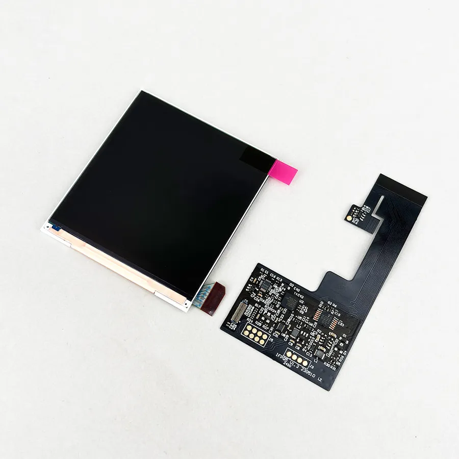
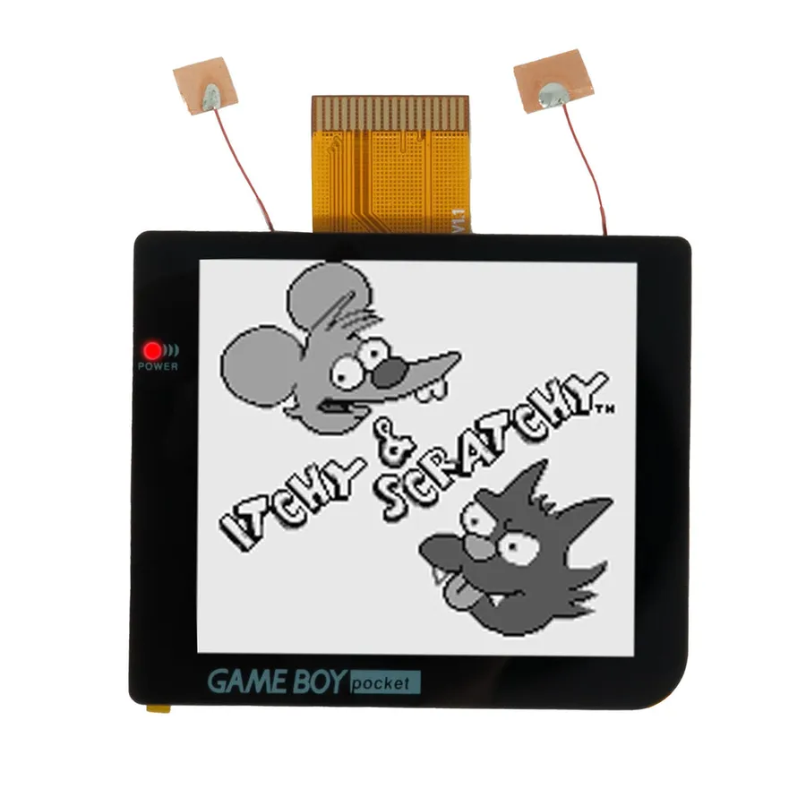
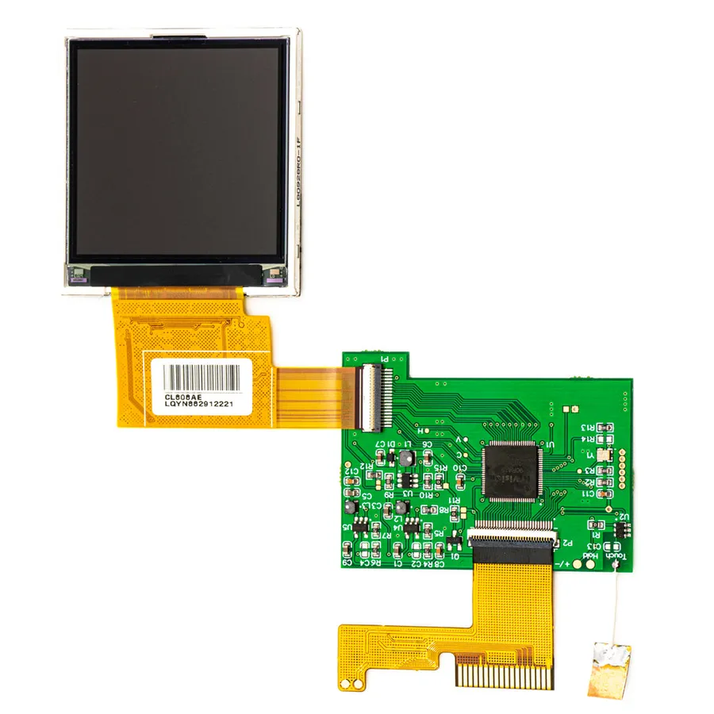
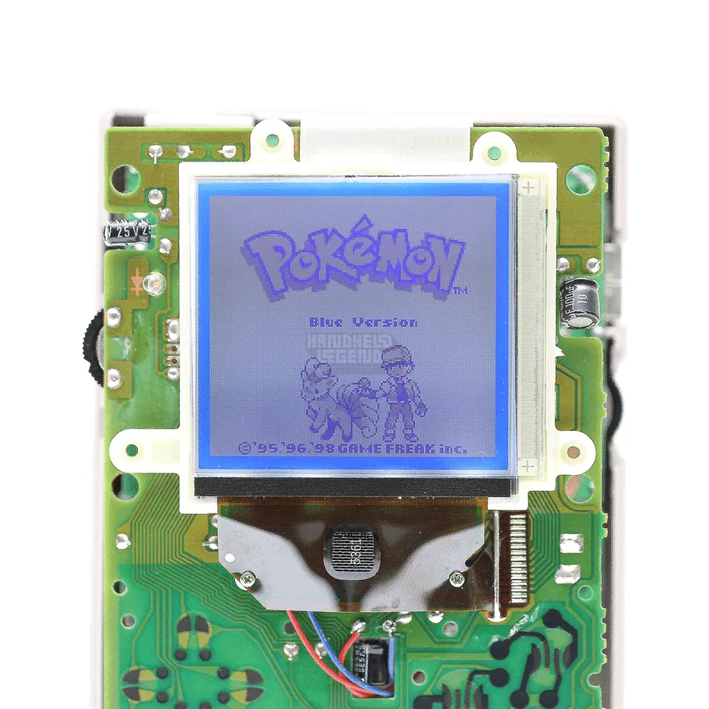
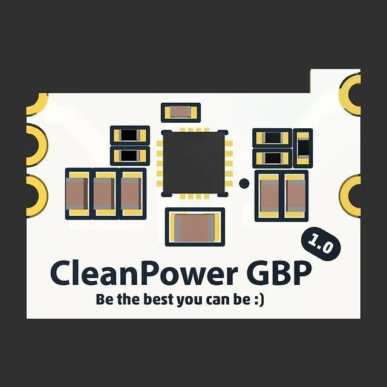
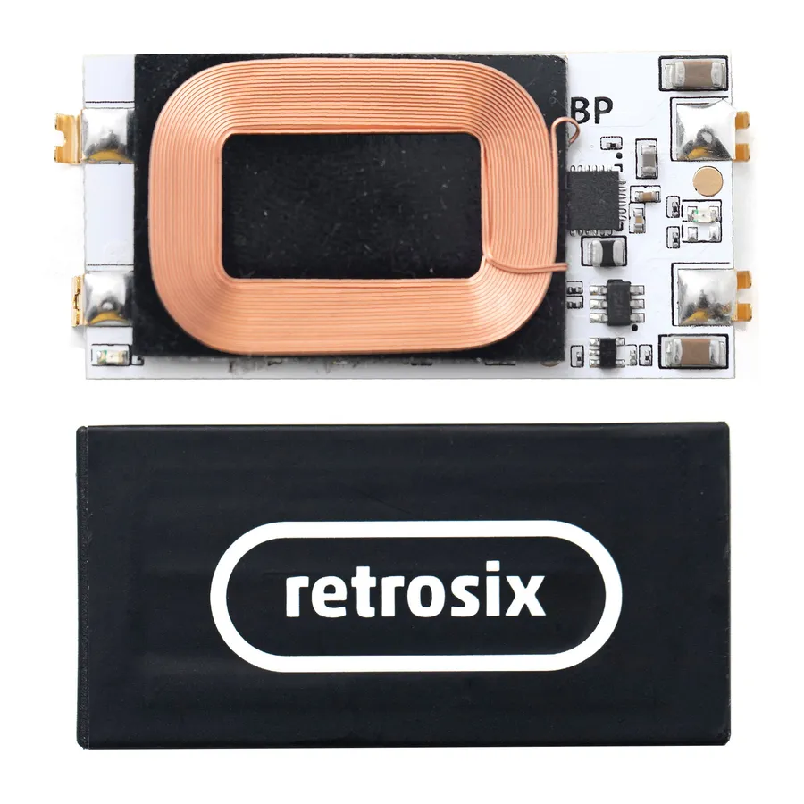
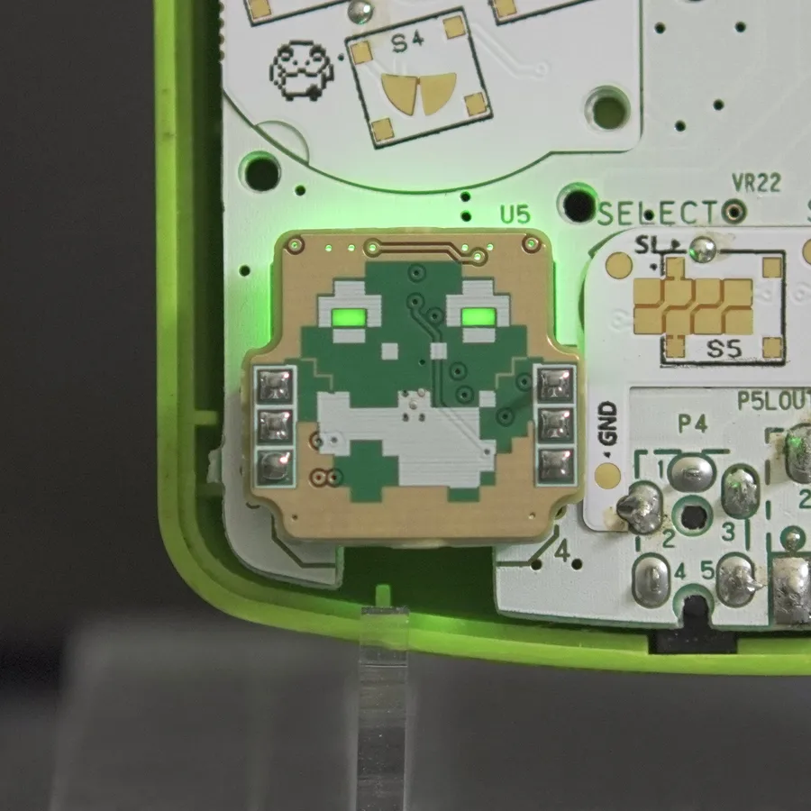
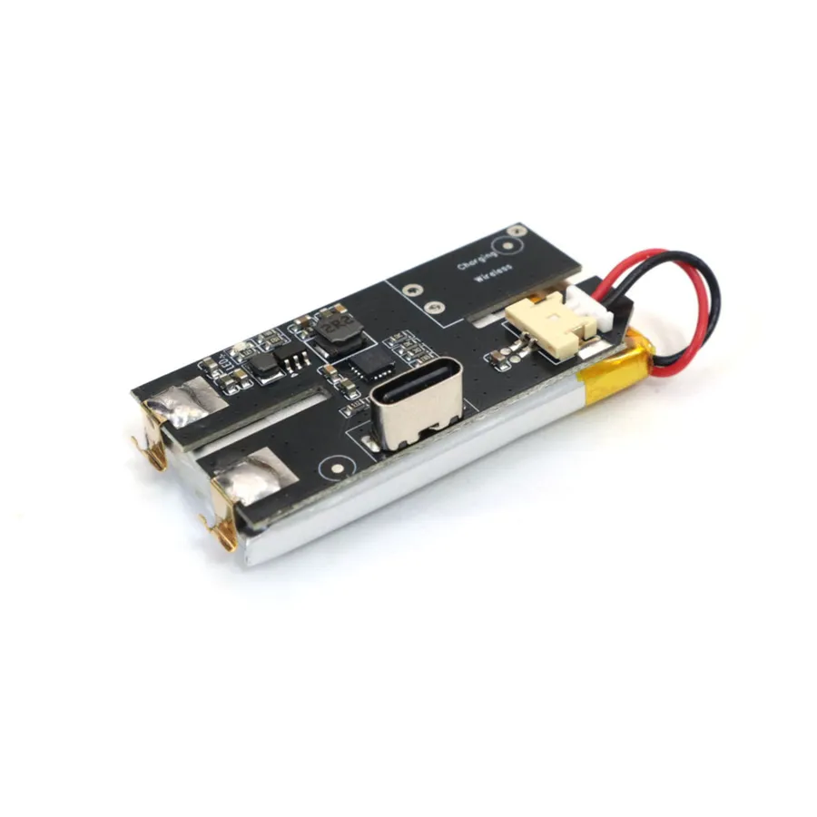

Home ›
Wiki ›
Game Boy Pocket
The Game Boy Pocket (MGB-001, 1996) takes the DMG formula into a slimmer body powered by just two AAA batteries. More compact but also tighter on power, it demands clean power as soon as you add an IPS screen. Here are the go-to mods to restore and elevate it, sorted by category, with their difficulty, price and prerequisites.
📺 Display ⚡ Power (Critical) 🔊 Audio 🔘 Buttons
The most transformative mod: replacing the original reflective panel with a backlit IPS screen. On the Pocket, almost every IPS kit requires clean power (see CleanPower under Power), because the stock regulator is quickly overwhelmed.
Laminated

© FunnyPlaying FunnyPlaying
MGB IPS Laminated Kit
The sharpest screen for your Pocket: vivid colors, laminated glass and a clean install.
Perfectly centered image Glass laminated to the panel Color palettes and scanline modes Brightness adjustable via the contrast wheel Nearly solder-free (1 power wire + optional touch sensor)
Type Laminated IPS
OSD Yes
Control Contrast wheel ⚠ Prerequisites : CleanPower recommended (stable power), Shell trimming or aftermarket shell
Strengths Crystal-clear image Zero trapped dust Beginner-friendly install Factory look Trade-offs Stock shell trimming required (or an aftermarket shell) Higher battery drain CleanPower strongly recommended Sources : FunnyPlaying — GBP/GBL Retro Pixel IPS LCD Kit · Michael Iantorno — Mod Guide GBP FunnyPlaying IPS · Retro Modding — GBP IPS Install Guide
⚑ under review
© Handheld Legend Hispeedido
GBP Q5 IPS LCD (OSD)
IPS kit with a full OSD menu for complete control over brightness, colors and display effects.
Built-in OSD menu Adjustable brightness (contrast wheel) Pixel and scanline effects Customizable color palettes
Type IPS Q5
OSD Yes ⚠ Prerequisites : CleanPower recommended
Strengths Rich OSD Good value for money Sharp image Trade-offs Sometimes sparse instructions CleanPower recommended Higher power draw Sources : Handheld Legend — GBP Q5 IPS LCD Hispeedido
Laminated ⚑ under review

© Handheld Legend Hispeedido
GBP Laminated 2.8" IPS Kit
2.8-inch laminated kit for a glare-free, dust-free image that's 22% larger than stock.
2.8" laminated panel (480x432, +22% vs stock) Zero dust under the glass 20 brightness levels, 36 palettes, 5 pixel effects Wide viewing angles (178°) OSD: position, battery, colors, reset
Type Laminated IPS 2.8"
Resolution 480x432
Size +22% vs stock
OSD Yes ⚠ Prerequisites : CleanPower recommended, Shell trimming or aftermarket shell
Strengths Large laminated panel Vibrant image Full OSD Trade-offs Permanent mount (foam adhesive, test fit first) Shell trimming required CleanPower recommended Sources : Handheld Legend — GBP Laminated 2.8" IPS Hispeedido · Retro Game Repair Shop — GBP Laminated Q5 OSD
⚑ under review

© Retro Modding — Backlit TFT LCD for Game Boy Pocket Cloud Game Store
Drop-in TFT Kit
The ideal option to keep your stock shell with no trimming: a backlit TFT panel at the original size.
No-trim shell installation Stock size preserved Low power draw Color palettes Multiple brightness levels
Type Backlit TFT
Trimming None Strengths Preserves the stock shell Low power draw Keeps the stock screen ratio Trade-offs TFT panel (lower image quality than IPS) Soldering required despite being drop-in Panel sometimes smaller than OEM Sources : Retro Modding — Backlit TFT LCD for Game Boy Pocket · Handheld Legend — GBC/Pocket TFT LCD
⚑ under review

© Handheld Legend Handheld Legend
Backlight & Bivert
The traditional method: keep the original screen while greatly improving visibility with a backlight and a bivert chip.
Authentic look preserved Improved contrast (bivert module) Several backlight colors Keeps the original reflective panel
Type Backlight + bivert module
Screen Original kept Strengths Keeps the authentic retro look Affordable Low power consumption Trade-offs Fine soldering and reflector removal are tricky Harder than drop-in kits 28 AWG wire required Sources : Handheld Legend — GBP Bivert Installation · Game Boy Modding Wiki — Backlight Mods
The Pocket only has two AAA batteries and a fragile regulator: stabilizing the power supply is essential with an IPS screen. Switch to a rechargeable USB-C or Qi Li-Po battery for modern runtime, too.
Essential ⚑ under review

© RetroSix RetroSix
CleanPower Regulator
The Pocket lacks the current for IPS mods. This 5V regulator replaces the stock power supply and stabilizes the whole system.
Clean, stable 5V output Eliminates random reboots Stabilizes screen brightness 2.5V to 12V input Compatible with aftermarket IPS screens (FunnyPlaying, Hispeedido)
Output Stable 5V
Input 2.5V – 12V Strengths Eliminates dropouts with an IPS screen Clean voltage Low price High power efficiency Trade-offs Fine soldering required Doesn't support original (OEM) screens Sources : RetroSix — GBP CleanPower Regulator
⚑ under review
© Natalie the Nerd NatalieTheNerd
Safer Charge Pocket
Integrate a Li-Po battery safely with smart USB-C charging and full protection.
USB-C charging Short-circuit protection Clean, safe charge management Ultra-compact form factor Works on Pocket and Color (Safer Charge DC)
Charging USB-C
Protection Short-circuit / charge ⚠ Prerequisites : Li-Po battery in good condition (never swollen)
Strengths Safe charging Modern USB-C Very compact Designed by a respected modder Trade-offs Soldering required (USB-C, F1, header pins) Li-Po handling is risky if careless Sources : Natalie the Nerd — Safer Charge DC
⚑ under review

© RetroSix RetroSix
CleanJuice Air (MGB)
The all-in-one drop-in Li-Po battery with Qi wireless charging (and even reverse charging from a phone).
Qi wireless charging 2.6W power, up to ~9h of play (stock console) Reverse charging supported Drop-in form factor optimized for the Pocket
Charging Qi wireless
Power 2.6W
Runtime ~9h (stock) ⚠ Prerequisites : RetroSix ABS shell (otherwise major trimming)
Strengths Super convenient wireless charging No port to drill Good battery life Trade-offs Heavy AAA compartment trimming if not a RetroSix shell Pricier than a plain USB-C battery Sources : RetroSix — CleanJuice Air GBP
⚑ under review

© FroggoCustoms FroggoCustoms
Frogulator DC Regulator
A reliable, compact DC regulator as an alternative to CleanPower, with a built-in battery indicator (the frog's eyes change color!).
5V rail for the console and backlit screens Built-in battery indicator (LED eyes) Switchable NiMH / Li-Po mode Works on Pocket and GBC Compact and discreet
Output 5V
Compatibility Pocket / GBC
Indicator Battery (NiMH/Li-Po) ⚠ Prerequisites : Backlit aftermarket screen (no OEM screen)
Strengths Stable power Fun battery indicator Works on Pocket and GBC Trade-offs Stock regulator through-holes must be cleared Doesn't work with OEM screens (even biverted) Header pins must be soldered yourself Sources : FroggoCustoms — Frogulator GBC/Pocket DC Regulator · FroggoCustoms — Install Guide
⚑ under review

© Retro Modding Hispeedido
USB-C Battery Cover
Battery cover with a built-in USB-C port for modern, solder-free charging on a Li-Po battery.
USB-C port built into the cover Solder-free installation Charge and play Li-Po compatible Works with USB-A to USB-C and USB-C to USB-C chargers
Charging USB-C
Battery Li-Po
Soldering No Strengths No soldering Convenient USB-C charging Easy install Trade-offs Li-Po battery must be handled with care Capacity limited by the form factor Sources : Retro Modding — USB-C Battery Pack Hispeedido GBP
The Pocket's original speaker is small and limited: a class-D amp or a wireless module restores volume and clarity.
⚑ under review
📷
RetroSix
CleanAmp Pocket
The ideal class-D amp for the little Pocket, with filtering to avoid noise. Sound up to 500% louder.
Class-D amplifier Sound up to 500% louder than stock Premium speaker included Controlled power draw Noise filtering
Type Class-D amp
Gain Up to +500% Strengths Much higher volume Crystal-clear sound Quality speaker Trade-offs Soldering required (28-30 AWG wire) Mind the components near the pads Sources : RetroSix — GBP CleanAmp v1.1 Install Guide
⚑ under review
📷
Cloud Game Store
Wire Free Audio Amplifier
Wire-free audio amplifier for a direct install to boost the Pocket's sound.
Wire-free installation Significantly improved volume Compatible with all Pocket revisions Compact form factor
Type Wire-free amp Strengths Simplified install (no wiring) Good volume gain Discreet Trade-offs Variable availability Possible contact soldering depending on the revision
General sources : Game Boy Modding Wiki — Backlight Mods